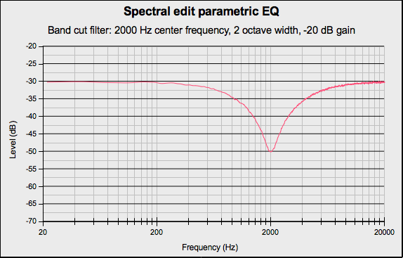
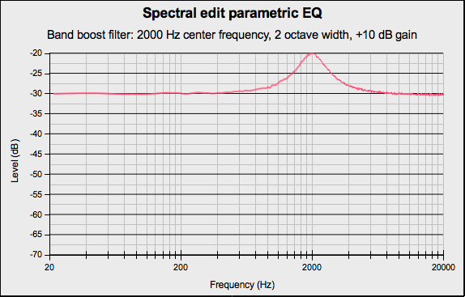

Spectral edit parametric EQ
From Audacity Development Manual
The Spectral edit parametric EQ tool is used with a Spectral Selection to apply either a band boost filter, or band-cut filter to the selection.
Accessed by:
{kind=link}
Depending on how the track is displayed and what spectral selection has been made, this effect will do one of the following:
- When the track is not in Spectrogram View with Spectral Selection enabled, an error message will be displayed
- When the spectral selection has a center, upper and lower frequency this effect performs a band cut or band boost according to the value entered in the "Gain (dB)" control. The center frequency is defined by the center frequency of the spectral selection and the bandwidth is defined by the upper and lower frequencies of the spectral selection.
- When either the upper or lower frequency boundary is undefined, an error message will be displayed to that effect. If the lower frequency boundary is 0 Hz there is no center frequency or bandwidth and an error message will state that the lower frequency must be above 0 Hz.
| Due to a limitation in Nyquist effects, the effect dialog will be displayed before any error message. |
Buttons
Clicking on the command buttons give the following results:
- gives a dropdown menu enabling you to manage presets for the tool and to see some detail about the tool. For details see Manage presets.
- plays a short preview of what the audio would sound like if the effect is applied with the current settings, without making actual changes to the audio. The length of preview is determined by your setting in , the default setting is 6 seconds.
- applies the effect to the selected audio with the current effect settings.
- aborts the effect and leaves the audio unchanged.
 brings you to the appropriate page in the Manual, this page.
brings you to the appropriate page in the Manual, this page.
Band Cut
In the following example the spectral selection had a center frequency of 2000 Hz and a bandwidth of 2 octaves. In the Spectral edit parametric EQ dialog, the Gain was set to -20 dB.
- 
Band Boost
In the following example the spectral selection had a center frequency of 2000 Hz and a bandwidth of 2 octaves. In the Spectral edit parametric EQ dialog, the Gain was set to +10 dB.
- 